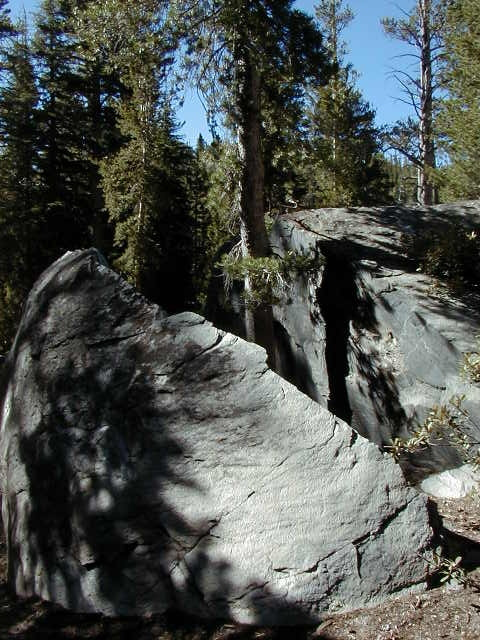

July 2, 1999 | July 3, 1999 | July 4, 1999 | July 5, 1999
|
Another view of Banner peak at Garnet Lake |
|
Retrace steps back to Shadow Creek. Looking south from top of ridge separating Shadow Creek and Garnet Lake. Volcanic Ridge on the right. |
|  | Gone up to Rosalind Lake to camp. Tree growing out of rock split into two halves. |
July 2, 1999 | July 3, 1999 | July 4, 1999 | July 5, 1999